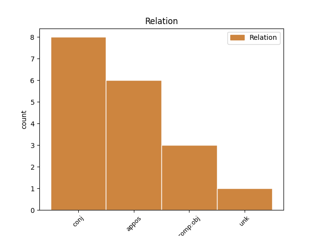
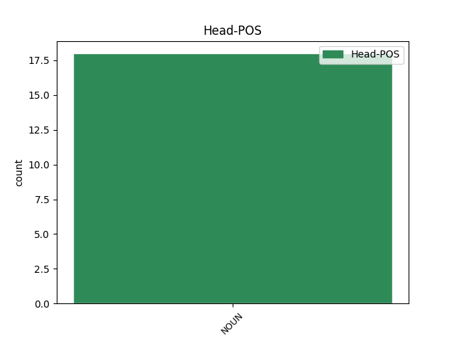
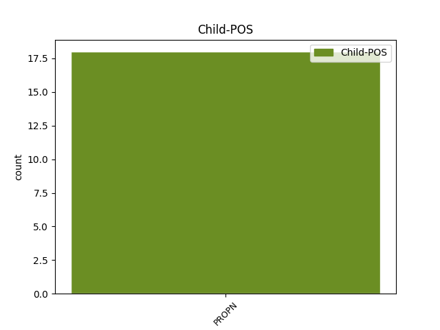

Distribution of features within this leaf



Agreement Rules sorted by frequency.
- When the dependent token is the conjunct(conj) of the head token, and the head token is NOUN and the dependent token is PROPN.
1 Měl _ _ _ _ 0 _ _ _
2 rád _ _ _ _ 0 _ _ _
3 romány _ _ _ _ 0 _ _ _
4 s _ _ _ _ 0 _ _ _
5 nádechem _ _ _ _ 0 _ _ _
6 dobrodružství _ _ _ _ 0 _ _ _
7 a _ _ _ _ 0 _ _ _
8 spravedlnosti _ _ _ _ 0 _ _ _
9 , _ _ _ _ 0 _ _ _
10 Dumasova _ _ _ _ 0 _ _ _
11 Hraběte _ _ _ _ 0 _ _ _
12 Monte _ _ _ _ 0 _ _ _
13 Christa _ _ _ _ 0 _ _ _
14 nebo _ _ _ _ 0 _ _ _
15 Hugovy _ _ _ _ 0 _ _ _
16 Bídníky _ _ _ _ 0 _ _ _
17 , _ _ _ _ 0 _ _ _
18 Saint _ _ _ _ 0 _ _ _
19 - _ _ _ _ 0 _ _ _
20 Exupéryho _ _ _ _ 0 _ _ _
21 Malého _ _ _ _ 0 _ _ _
22 prince princ NOUN NNMS4-----A---- Animacy=Anim|Case=Acc|Gender=Masc|Number=Sing|Polarity=Pos 0 _ _ _
23 nebo _ _ _ _ 0 _ _ _
24 Kazantzakisova _ _ _ _ 0 _ _ _
25 Řeka Řek PROPN NNMS4-----A---- Animacy=Anim|Case=Acc|Gender=Masc|NameType=Nat|Number=Sing|Polarity=Pos 22 conj _ _
26 Zorbu _ _ _ _ 0 _ _ _
27 . _ _ _ _ 0 _ _ _
1 Najednou _ _ _ _ 0 _ _ _
2 se _ _ _ _ 0 _ _ _
3 s _ _ _ _ 0 _ _ _
4 námahou _ _ _ _ 0 _ _ _
5 zvedl _ _ _ _ 0 _ _ _
6 z _ _ _ _ 0 _ _ _
7 křesla _ _ _ _ 0 _ _ _
8 , _ _ _ _ 0 _ _ _
9 aby _ _ _ _ 0 _ _ _
10 by _ _ _ _ 0 _ _ _
11 ukázal _ _ _ _ 0 _ _ _
12 , _ _ _ _ 0 _ _ _
13 jak _ _ _ _ 0 _ _ _
14 jeho _ _ _ _ 0 _ _ _
15 učitel učitel NOUN NNMS1-----A---- Animacy=Anim|Case=Nom|Gender=Masc|Number=Sing|Polarity=Pos 0 _ _ _
16 , _ _ _ _ 0 _ _ _
17 velký _ _ _ _ 0 _ _ _
18 Baalšem _ _ _ _ 0 _ _ _
19 Tov Tov PROPN NNMS1-----A---- Animacy=Anim|Case=Nom|Gender=Masc|NameType=Sur|Number=Sing|Polarity=Pos 15 appos _ SpaceAfter=No
20 , _ _ _ _ 0 _ _ _
21 při _ _ _ _ 0 _ _ _
22 modlení _ _ _ _ 0 _ _ _
23 vždy _ _ _ _ 0 _ _ _
24 poskakoval _ _ _ _ 0 _ _ _
25 , _ _ _ _ 0 _ _ _
26 dokonce _ _ _ _ 0 _ _ _
27 i _ _ _ _ 0 _ _ _
28 tancoval _ _ _ _ 0 _ _ _
29 . _ _ _ _ 0 _ _ _
Disagree Examples:
1 Na _ _ _ _ 0 _ _ _
2 konci konec NOUN NNIS6-----A---- Animacy=Inan|Case=Loc|Gender=Masc|Number=Sing|Polarity=Pos 0 _ _ _
3 přinejlepším _ _ _ _ 0 _ _ _
4 trpící _ _ _ _ 0 _ _ _
5 Míninka Míninka PROPN NNFS1-----A---- Case=Nom|Gender=Fem|NameType=Giv|Number=Sing|Polarity=Pos 2 unk _ SpaceAfter=No
6 . _ _ _ _ 0 _ _ _
1 Tou _ _ _ _ 0 _ _ _
2 rukou _ _ _ _ 0 _ _ _
3 zase _ _ _ _ 0 _ _ _
4 plavně _ _ _ _ 0 _ _ _
5 hodila _ _ _ _ 0 _ _ _
6 směrem směr NOUN NNIS7-----A---- Animacy=Inan|Case=Ins|Gender=Masc|Number=Sing|Polarity=Pos 0 _ _ _
7 k _ _ _ _ 0 _ _ _
8 Havlovi Havel PROPN NNMS3-----A---- Animacy=Anim|Case=Dat|Gender=Masc|NameType=Sur|Number=Sing|Polarity=Pos 6 comp:obj _ SpaceAfter=No
9 . _ _ _ _ 0 _ _ _
1 pak _ _ _ _ 0 _ _ _
2 tanečními _ _ _ _ 0 _ _ _
3 pohyby _ _ _ _ 0 _ _ _
4 vrátila _ _ _ _ 0 _ _ _
5 ruce _ _ _ _ 0 _ _ _
6 dopředu _ _ _ _ 0 _ _ _
7 , _ _ _ _ 0 _ _ _
8 pohladila _ _ _ _ 0 _ _ _
9 se _ _ _ _ 0 _ _ _
10 pravou _ _ _ _ 0 _ _ _
11 dlaní _ _ _ _ 0 _ _ _
12 po _ _ _ _ 0 _ _ _
13 levém _ _ _ _ 0 _ _ _
14 rameni _ _ _ _ 0 _ _ _
15 a _ _ _ _ 0 _ _ _
16 levou _ _ _ _ 0 _ _ _
17 dlaní _ _ _ _ 0 _ _ _
18 po _ _ _ _ 0 _ _ _
19 pravém _ _ _ _ 0 _ _ _
20 rameni _ _ _ _ 0 _ _ _
21 a _ _ _ _ 0 _ _ _
22 zase _ _ _ _ 0 _ _ _
23 udělala _ _ _ _ 0 _ _ _
24 plavný _ _ _ _ 0 _ _ _
25 pohyb _ _ _ _ 0 _ _ _
26 rukou _ _ _ _ 0 _ _ _
27 , _ _ _ _ 0 _ _ _
28 tentokrát _ _ _ _ 0 _ _ _
29 směrem směr NOUN NNIS7-----A---- Animacy=Inan|Case=Ins|Gender=Masc|Number=Sing|Polarity=Pos 0 _ _ _
30 k _ _ _ _ 0 _ _ _
31 Havlovi Havel PROPN NNMS3-----A---- Animacy=Anim|Case=Dat|Gender=Masc|NameType=Sur|Number=Sing|Polarity=Pos 29 comp:obj _ SpaceAfter=No
32 , _ _ _ _ 0 _ _ _
33 který _ _ _ _ 0 _ _ _
34 také _ _ _ _ 0 _ _ _
35 nepatrně _ _ _ _ 0 _ _ _
36 a _ _ _ _ 0 _ _ _
37 rozpačitě _ _ _ _ 0 _ _ _
38 pohnul _ _ _ _ 0 _ _ _
39 rukou _ _ _ _ 0 _ _ _
40 . _ _ _ _ 0 _ _ _
1 pak _ _ _ _ 0 _ _ _
2 přejela _ _ _ _ 0 _ _ _
3 pravou _ _ _ _ 0 _ _ _
4 rukou _ _ _ _ 0 _ _ _
5 vzhůru _ _ _ _ 0 _ _ _
6 po _ _ _ _ 0 _ _ _
7 vztyčené _ _ _ _ 0 _ _ _
8 levé _ _ _ _ 0 _ _ _
9 ruce _ _ _ _ 0 _ _ _
10 a _ _ _ _ 0 _ _ _
11 pak _ _ _ _ 0 _ _ _
12 zas _ _ _ _ 0 _ _ _
13 levou _ _ _ _ 0 _ _ _
14 rukou _ _ _ _ 0 _ _ _
15 po _ _ _ _ 0 _ _ _
16 pravé _ _ _ _ 0 _ _ _
17 ruce _ _ _ _ 0 _ _ _
18 , _ _ _ _ 0 _ _ _
19 načež _ _ _ _ 0 _ _ _
20 udělala _ _ _ _ 0 _ _ _
21 oběma _ _ _ _ 0 _ _ _
22 rukama _ _ _ _ 0 _ _ _
23 elegantní _ _ _ _ 0 _ _ _
24 pohyb _ _ _ _ 0 _ _ _
25 směrem směr NOUN NNIS7-----A---- Animacy=Inan|Case=Ins|Gender=Masc|Number=Sing|Polarity=Pos 0 _ _ _
26 k _ _ _ _ 0 _ _ _
27 Flajšmanovi Flajšman PROPN NNMS3-----A---- Animacy=Anim|Case=Dat|Gender=Masc|NameType=Sur|Number=Sing|Polarity=Pos 25 comp:obj _ SpaceAfter=No
28 , _ _ _ _ 0 _ _ _
29 jako _ _ _ _ 0 _ _ _
30 by _ _ _ _ 0 _ _ _
31 mu _ _ _ _ 0 _ _ _
32 házela _ _ _ _ 0 _ _ _
33 blůzu _ _ _ _ 0 _ _ _
34 . _ _ _ _ 0 _ _ _